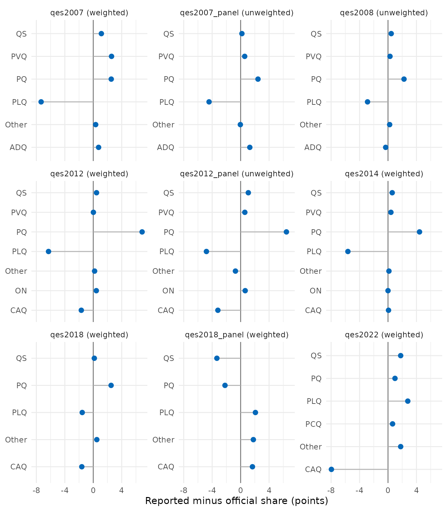
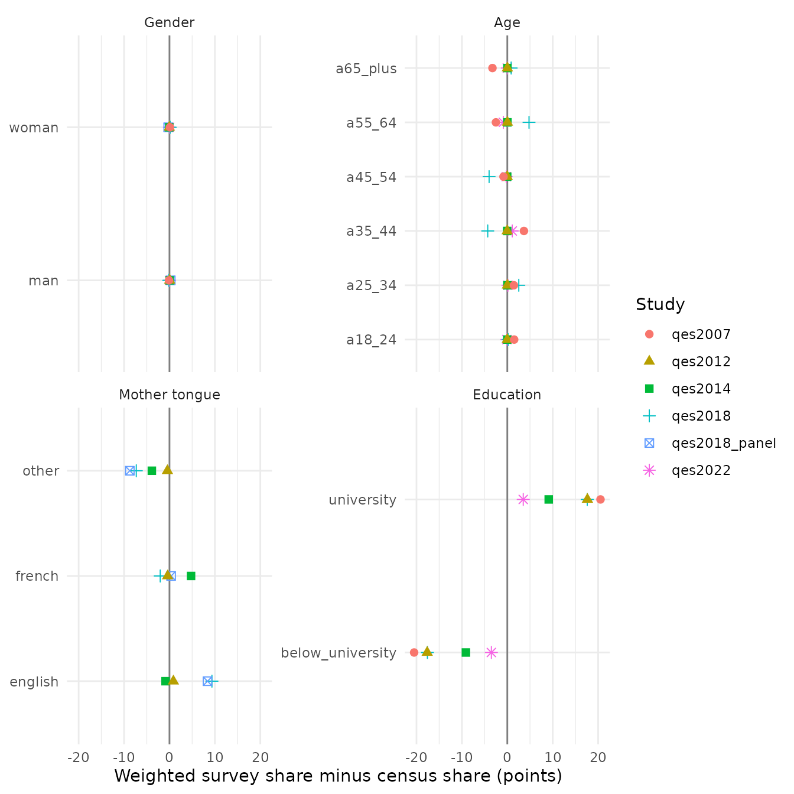

Validation against official results and the census
Source:vignettes/articles/validation.Rmd
validation.RmdHow close do the harmonized studies come to what is known about the electorate? This page compares, for every study the harmonization specification covers:
- the reported vote with the official results of each general election, published by Élections Québec;
- the reported turnout with the official turnout;
- the gender, age, mother tongue and education of respondents with the census that precedes the study (Statistics Canada);
- a few relationships between answers that any valid measure should show (construct validity).
The page is built when the website is built: the data files are
downloaded from their Dataverse deposits through qesR’s cache and
harmonized with qes_harmonize(). The benchmarks are in
inst/extdata/validation/ of the qesR source repository,
each row with its source; the census margins also ship with the package,
the official results of Élections Québec and the recorded report do not
(their terms of use need Élections Québec’s written permission, which is
pending). The same checks run every week on the pinned files and fail
when the weighted recall index (check V-L2 of the specification) or a
weighted census index rises more than 2 points above its recorded value,
when turnout over-reporting leaves 0 to 35 points, or when a
construct-validity direction (check V-L4) fails. An index that falls, or
rises by less, passes.
tr <- function(en, fr) if (identical(params$lang, "fr")) fr else en
num <- function(x, digits = 1, sign = FALSE) {
formatC(x, format = "f", digits = digits, flag = if (sign) "+" else "",
decimal.mark = tr(".", ","))
}
# every study the specification covers, harmonized from the pinned files,
# against the benchmarks that ship with qesR
report <- qesR:::.qes_validation_run("all")
report <- qesR:::.qes_validation_gate(report, qesR:::.qes_validation_recorded())
studies <- qes_studies()
report$year <- studies$year[match(report$study, studies$study)]
report$weighting <- ifelse(report$weight == "none", tr("unweighted", "non pondéré"),
tr("weighted", "pondéré"))
# one row per study and check: the weighted value where the study has a
# reviewed weight, the unweighted one otherwise
best <- function(x) {
x <- x[order(x$study, x$variable, x$weight == "none"), ]
x[!duplicated(paste(x$study, x$variable)), ]
}1. Reported vote and official results
For each study, the table gives the dissimilarity index between the distribution of the reported vote and the official shares of valid votes: half the sum of the absolute differences between the two distributions, in points. It is the share of respondents who would have to change party for the two to agree; 0 is a perfect match. Parties that the study’s question did not list are counted as “other party” on the official side, since that is the only answer their voters could give.
idx <- report[report$check == "recall" & is.na(report$level), ]
wide <- reshape(idx[, c("study", "year", "reference", "weighting", "n", "value")],
idvar = c("study", "year", "reference"), timevar = "weighting",
direction = "wide", drop = "n")
wide <- merge(wide, aggregate(n ~ study, idx, max), by = "study")
wide <- wide[order(wide$year, wide$study), ]
un <- wide[[paste0("value.", tr("unweighted", "non pondéré"))]]
we <- wide[[paste0("value.", tr("weighted", "pondéré"))]]
knitr::kable(
data.frame(wide$study, wide$reference, wide$n, num(un),
ifelse(is.na(we), "", num(we))),
col.names = tr(c("Study", "Election", "N (reported a party)", "Index, unweighted", "Index, weighted"),
c("Étude", "Élection", "N (ont nommé un parti)", "Indice, non pondéré", "Indice, pondéré")),
align = c("l", "l", "r", "r", "r")
)| Study | Election | N (reported a party) | Index, unweighted | Index, weighted |
|---|---|---|---|---|
| qes1998 | QC1998 | 1126 | 9.4 | |
| qes2007 | QC2007 | 1727 | 7.7 | 7.3 |
| qes2007_panel | QC2007 | 1494 | 4.5 | |
| qes2008 | QC2008 | 898 | 3.2 | |
| qes2012 | QC2012 | 1274 | 11.0 | 8.0 |
| qes2012_panel | QC2012 | 633 | 8.7 | |
| qes2014 | QC2014 | 1283 | 4.9 | 5.6 |
| qes2018 | QC2018 | 2016 | 3.2 | 3.2 |
| qes2018_panel | QC2018 | 704 | 5.5 | 5.5 |
| qes2022 | QC2022 | 1101 | 9.0 | 8.0 |
The weighted index uses the weight the specification recommends for
the wave that asked the question; qes2007,
qes2012, qes2014, qes2018,
qes2022 and the 2018 panel have reviewed weights so far.
The weights of qes2007_panel, qes2012_panel,
the CROP polls and qes1998 are not documented well enough
to be used (their rows are needs_review), and both weights
of qes2008 are calibrated on the vote or on turnout, so
their index is unweighted. qes1998 interviewed francophones
only, a population the official results do not describe: it is shown for
reference but not checked.
# the weighted distribution where the study has a reviewed weight
shown <- best(idx[idx$study != "qes1998", ])
lv <- report[report$check == "recall" & !is.na(report$level) &
paste(report$study, report$weight) %in% paste(shown$study, shown$weight), ]
lv$party <- ifelse(lv$level == "other", tr("Other", "Autre"), lv$level)
lv$label <- paste0(lv$study, " (", lv$weighting, ")")
lv$label <- factor(lv$label, unique(lv$label[order(lv$year, lv$study)]))
ggplot(lv, aes(x = value, y = party)) +
geom_vline(xintercept = 0, colour = "grey50") +
geom_segment(aes(x = 0, xend = value, yend = party), colour = "grey70") +
geom_point(size = 2.2, colour = "#0468b9") +
facet_wrap(~label, ncol = 3, scales = "free_y") +
labs(
x = tr("Reported minus official share (points)", "Part déclarée moins part officielle (points)"),
y = NULL
) +
theme_minimal(base_size = 11)
2. Reported turnout
to <- best(report[report$check == "turnout", ])
to <- to[order(to$year, to$study), ]
# qes1998 (francophones only) is shown but not checked
checked <- to[!(to$status %in% "skipped"), ]
knitr::kable(
data.frame(to$study, to$reference, to$weighting, to$n, num(to$estimate), num(to$benchmark),
num(to$value, sign = TRUE)),
col.names = tr(c("Study", "Election", "Weighting", "N", "Reported turnout (%)", "Official turnout (%)", "Difference (points)"),
c("Étude", "Élection", "Pondération", "N", "Participation déclarée (%)", "Participation officielle (%)", "Écart (points)")),
align = c("l", "l", "l", "r", "r", "r", "r")
)| Study | Election | Weighting | N | Reported turnout (%) | Official turnout (%) | Difference (points) |
|---|---|---|---|---|---|---|
| qes1998 | QC1998 | unweighted | 1483 | 87.4 | 78.3 | +9.1 |
| qes2007 | QC2007 | weighted | 2162 | 90.7 | 71.2 | +19.5 |
| qes2007_panel | QC2007 | unweighted | 2054 | 85.3 | 71.2 | +14.1 |
| qes2008 | QC2008 | unweighted | 1131 | 87.2 | 57.4 | +29.8 |
| qes2012 | QC2012 | weighted | 1486 | 93.2 | 74.6 | +18.6 |
| qes2012_panel | QC2012 | unweighted | 844 | 92.2 | 74.6 | +17.6 |
| qes2014 | QC2014 | weighted | 1499 | 88.9 | 71.4 | +17.5 |
| qes2018 | QC2018 | weighted | 2635 | 83.2 | 66.5 | +16.8 |
| qes2018_panel | QC2018 | weighted | 842 | 83.7 | 66.5 | +17.2 |
| qes2022 | QC2022 | weighted | 1215 | 90.0 | 66.2 | +23.8 |
Official turnout is ballots cast over registered electors. Reported turnout is the share who say they voted among respondents who answered yes or no; those not registered or not eligible, and those who did not know or would not say, are left out.
3. Respondents and the census
Each study is compared with the census that precedes its election (2006, 2011, 2016 or 2021). Gender and age are compared at 18 and over; for mother tongue and education, whose tables have no 18-and-over cut, the nearest published age cut is used, and respondents are cut the same way when their age is known:
| Margin | Census | Population compared | Table |
|---|---|---|---|
| Gender, age (six bands) | 2016, 2021 | 18 and over | 98-10-0020-01 |
| Gender, age (six bands) | 2011 | 18 and over | Census Profile 98-316-XWE2011001 |
| Gender, age (six bands) | 2006 | 18 and over | 97-551-XCB2006009 |
| Mother tongue | 2011, 2016, 2021 | 20 and over, outside institutions, one mother tongue | 98-10-0218-01 |
| Education | 2006 to 2021 | 25 and over, private households | 98-10-0384-01 |
The 2011 education counts come from the National Household Survey, which was voluntary. The 2006 table 97-551-XCB2006009 is no longer on Statistics Canada’s site; its file was retrieved from the Internet Archive. The one 2006 table found with mother tongue by age counts institutional residents and many more multiple mother tongues, so 2006 has no mother-tongue comparison. Mother tongue is compared among people who report one mother tongue: the census’s multiple answers and the surveys’ answers naming two languages are left out. Education is compared as university (any university certificate, diploma or degree) or below.
cz <- report[report$check == "census" & is.na(report$level), ]
vars <- c(gender = tr("Gender", "Genre"), age_group6 = tr("Age", "Âge"),
lang_mother = tr("Mother tongue", "Langue maternelle"),
education = tr("Education", "Scolarité"))
cz$cell <- num(cz$value)
cw <- reshape(cz[, c("study", "year", "reference", "variable", "weighting", "cell")],
idvar = c("study", "year", "reference", "weighting"), timevar = "variable",
direction = "wide")
names(cw) <- sub("^cell\\.", "", names(cw))
for (v in names(vars)) if (is.null(cw[[v]])) cw[[v]] <- NA
cw <- cw[order(cw$year, cw$study, cw$weighting), ]
out <- cw[, c("study", "reference", "weighting", names(vars))]
out[is.na(out)] <- ""
knitr::kable(
out, row.names = FALSE,
col.names = c(tr(c("Study", "Census", "Weighting"), c("Étude", "Recensement", "Pondération")), unname(vars)),
align = c("l", "l", "l", "r", "r", "r", "r")
)| Study | Census | Weighting | Gender | Age | Mother tongue | Education |
|---|---|---|---|---|---|---|
| qes_crop_2007_2010 | Census 2006 | unweighted | 6.9 | 5.9 | 13.5 | |
| qes2007 | Census 2006 | unweighted | 5.2 | 11.2 | 20.8 | |
| qes2007 | Census 2006 | weighted | 0.1 | 6.6 | 20.5 | |
| qes2007_panel | Census 2006 | unweighted | 5.7 | 6.1 | 10.6 | |
| qes2008 | Census 2006 | unweighted | 2.1 | 3.8 | 22.9 | |
| qes2012 | Census 2011 | unweighted | 2.3 | 15.9 | 4.5 | 18.5 |
| qes2012 | Census 2011 | weighted | 0.0 | 0.1 | 0.9 | 17.6 |
| qes2012_panel | Census 2011 | unweighted | 8.8 | 11.9 | 9.4 | |
| qes2014 | Census 2011 | unweighted | 6.5 | 4.7 | 8.1 | 21.3 |
| qes2014 | Census 2011 | weighted | 0.0 | 0.1 | 4.8 | 9.1 |
| qes2018 | Census 2016 | unweighted | 0.2 | 14.1 | 8.6 | 18.7 |
| qes2018 | Census 2016 | weighted | 0.1 | 8.3 | 9.3 | 17.6 |
| qes2018_panel | Census 2016 | unweighted | 0.1 | 8.5 | ||
| qes2018_panel | Census 2016 | weighted | 0.3 | 8.7 | ||
| qes2022 | Census 2021 | unweighted | 1.2 | 2.5 | 19.4 | |
| qes2022 | Census 2021 | weighted | 0.0 | 1.2 | 3.5 |
Each cell is a dissimilarity index in points (0 is a perfect match); a blank cell is a margin the study did not ask, or one the collected census tables do not publish for that year (mother tongue in 2006).
cl <- report[report$check == "census" & !is.na(report$level) & report$weight != "none", ]
cl$variable <- factor(vars[cl$variable], unname(vars))
cl$study <- factor(cl$study, unique(cl$study[order(cl$year)]))
ggplot(cl, aes(x = value, y = level, colour = study, shape = study)) +
geom_vline(xintercept = 0, colour = "grey50") +
geom_point(size = 2.2) +
facet_wrap(~variable, ncol = 2, scales = "free_y") +
labs(
x = tr("Weighted survey share minus census share (points)",
"Part pondérée de l'enquête moins part au recensement (points)"),
y = NULL, colour = tr("Study", "Étude"), shape = tr("Study", "Étude")
) +
theme_minimal(base_size = 11)
4. Relationships between answers
These checks do not compare with an outside source. They ask whether the harmonized answers relate to one another the way decades of research say they should; a mapping error (a party code swapped, a scale reversed) would break them.
k <- report[report$check == "construct", ]
k <- k[order(k$year, k$study, k$variable), ]
what <- c(interest_4pt = tr("Voters are more interested than nonvoters (mean, 1-4)",
"Les votants sont plus intéressés que les abstentionnistes (moyenne, 1-4)"),
lr_self = tr("QS voters are to the left of CAQ voters (mean, 0-10)",
"Les électeurs de QS sont à gauche de ceux de la CAQ (moyenne, 0-10)"),
sov_indep = tr("Yes to independence: PQ voters more than 40 points above PLQ voters (%)",
"Oui à l'indépendance : électeurs du PQ plus de 40 points au-dessus de ceux du PLQ (%)"),
pid_prov = tr("Partisans who voted for their party: at least 55% (%)",
"Partisans qui ont voté pour leur parti : au moins 55 % (%)"))
knitr::kable(
data.frame(k$study, what[k$variable], num(k$estimate),
ifelse(is.na(k$benchmark), "", num(k$benchmark)),
ifelse(k$status == "pass", tr("yes", "oui"), tr("no", "non"))),
col.names = tr(c("Study", "Expected", "Value", "Compared with", "Holds"),
c("Étude", "Attendu", "Valeur", "Comparé à", "Vérifié")),
align = c("l", "l", "r", "r", "l")
)| Study | Expected | Value | Compared with | Holds |
|---|---|---|---|---|
| qes2007 | Partisans who voted for their party: at least 55% (%) | 83.4 | yes | |
| qes2008 | Partisans who voted for their party: at least 55% (%) | 86.9 | yes | |
| qes2012 | Voters are more interested than nonvoters (mean, 1-4) | 2.9 | 2.3 | yes |
| qes2012 | QS voters are to the left of CAQ voters (mean, 0-10) | 3.1 | 6.3 | yes |
| qes2012 | Partisans who voted for their party: at least 55% (%) | 83.0 | yes | |
| qes2012 | Yes to independence: PQ voters more than 40 points above PLQ voters (%) | 84.5 | 1.3 | yes |
| qes2014 | Voters are more interested than nonvoters (mean, 1-4) | 3.0 | 2.3 | yes |
| qes2014 | QS voters are to the left of CAQ voters (mean, 0-10) | 3.4 | 5.7 | yes |
| qes2014 | Partisans who voted for their party: at least 55% (%) | 84.2 | yes | |
| qes2014 | Yes to independence: PQ voters more than 40 points above PLQ voters (%) | 87.4 | 2.9 | yes |
| qes2018 | Voters are more interested than nonvoters (mean, 1-4) | 3.0 | 2.5 | yes |
| qes2018 | QS voters are to the left of CAQ voters (mean, 0-10) | 3.7 | 6.0 | yes |
| qes2018 | Partisans who voted for their party: at least 55% (%) | 82.9 | yes | |
| qes2018 | Yes to independence: PQ voters more than 40 points above PLQ voters (%) | 85.9 | 2.5 | yes |
| qes2018_panel | QS voters are to the left of CAQ voters (mean, 0-10) | 3.8 | 5.7 | yes |
| qes2022 | QS voters are to the left of CAQ voters (mean, 0-10) | 3.7 | 5.5 | yes |
| qes2022 | Partisans who voted for their party: at least 55% (%) | 78.6 | yes | |
| qes2022 | Yes to independence: PQ voters more than 40 points above PLQ voters (%) | 82.0 | 2.2 | yes |
Reading the differences
Turnout is over-reported in every study, here by 14
to 30 points (qes1998, francophones only, is left out). Two
causes add up and cannot be told apart with these data: some nonvoters
say they voted, and people who vote are more willing to answer election
surveys in the first place. The face-saving question formats of
qes2018 and qes2022 (several ways to say one
did not vote) are meant to reduce the first; weights calibrated on age,
gender, education and language do not correct either. The two rates also
count different people: the official rate is over registered electors,
some of whom have moved or died, while the surveys ask adults they
reached. Any analysis of turnout from these studies describes
respondents, not the electorate.
The reported vote is a recall, and it is not the
vote. It is asked days to weeks after the election, of
respondents whose participation is itself selective. Recall is often
said to drift toward the winner, but the pattern here is not a simple
winner’s bonus: in qes2012 the PQ, which won by less than a
point, is over-reported by 6.9 points and the PLQ under-reported by 6.3;
in qes2022 the CAQ, which won, is under-reported by 8.0
points. Who answers matters at least as much as how people remember:
online panels tend to over-represent the politically engaged and the
educated, and the voters of some parties may be harder to reach.
Weighting on demographics does not remove this and can move the index
either way (compare the two columns of the first table).
The question matters. A party the question did not
list could only be reported as “other” (the Green Party in
qes2018 and qes2022, the Conservative Party in
qes2018). The two Durand panels of 2007 and 2012 ask the
vote without reading the parties, by telephone; the other studies read
or show a list. The grades of qes_spec(view = "crosswalk")
record these differences.
Samples are not the census population. The census
counts residents, including people who are not citizens and cannot vote;
qes2022 sampled citizens only. The census tables for mother
tongue and education cover private households, and their age cuts differ
from 18 and over (section 3). Three gaps stand out. Education: every
study has more respondents with some university than the census has
holders of a university credential, partly because the surveys ask the
level reached (a year of university counts) and the census the
credential completed, and partly, most likely, because people with more
education are more willing to answer surveys; qes2022,
weighted on education, is the only study close to the census. Mother
tongue in qes2018: English speakers are over-represented
and speakers of other languages under-represented; the 2018 weight
corrects French against all other languages (its methodological report,
Table 14), not the split between English and other languages. Age in
qes2018: its weight corrects age in generational cells
(16-18, 19-38, 39-58, 59-73, 74 and over: Table 12 of the same report),
which cut across the ten-year bands used here; within them the weighted
sample still has too few people aged 35 to 54 and too many aged 55 to
64.
These benchmarks are coarse. An index can hide errors that offset each other: in 2012 the PQ and the PLQ finished less than a point apart, so a study that swapped their codes would match the official results about as well. That is why the harmonization is also checked against exact counts of each answer in the original files and against the relationships of section 4, and why each crosswalk row is reviewed against the questionnaire.
Sources
- Élections Québec, official results of the general elections of 1998 to 2022, province-wide votes by party and ballots cast, from its archived results files (for example https://donnees.electionsquebec.qc.ca/production/provincial/resultats/archives/gen2022-10-03/resultats.json).
- Statistics Canada, census tables 98-10-0020-01 (age and gender, 2016 and 2021), 98-10-0218-01 (mother tongue by age, 2011 to 2021) and 98-10-0384-01 (highest certificate by age and gender, 2006 to 2021); the 2011 Census Profile (catalogue 98-316-XWE2011001: age by sex); and the 2006 table 97-551-XCB2006009 (age by sex; the Internet Archive’s copy of Statistics Canada’s file).
The benchmark tables are in inst/extdata/validation/ of
the source repository, with the source of every row; the installed
package
(system.file("extdata", "validation", package = "qesR"))
has only the census margins. The recorded results of every study are in
validation_report.csv there; those of qes2022
keep the study’s licence, CC BY-NC 4.0 (the file COPYRIGHTS
of the package).